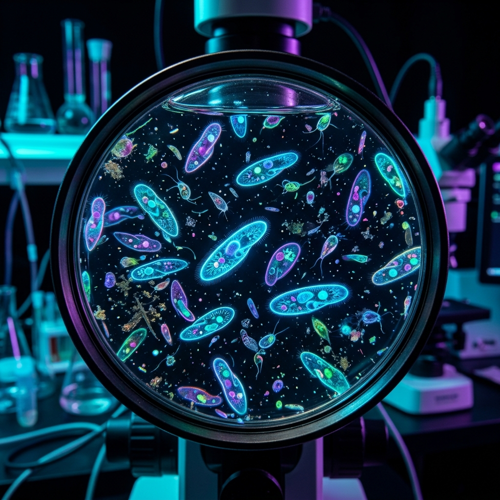
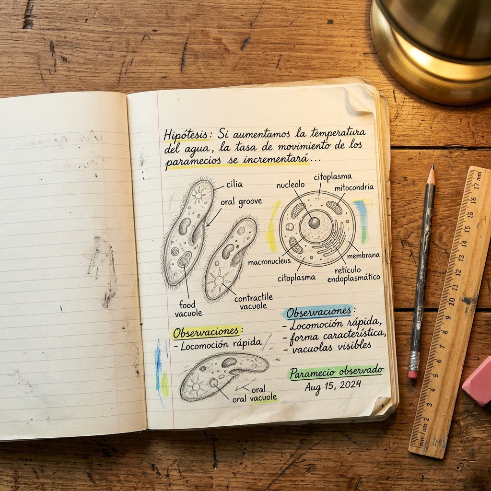
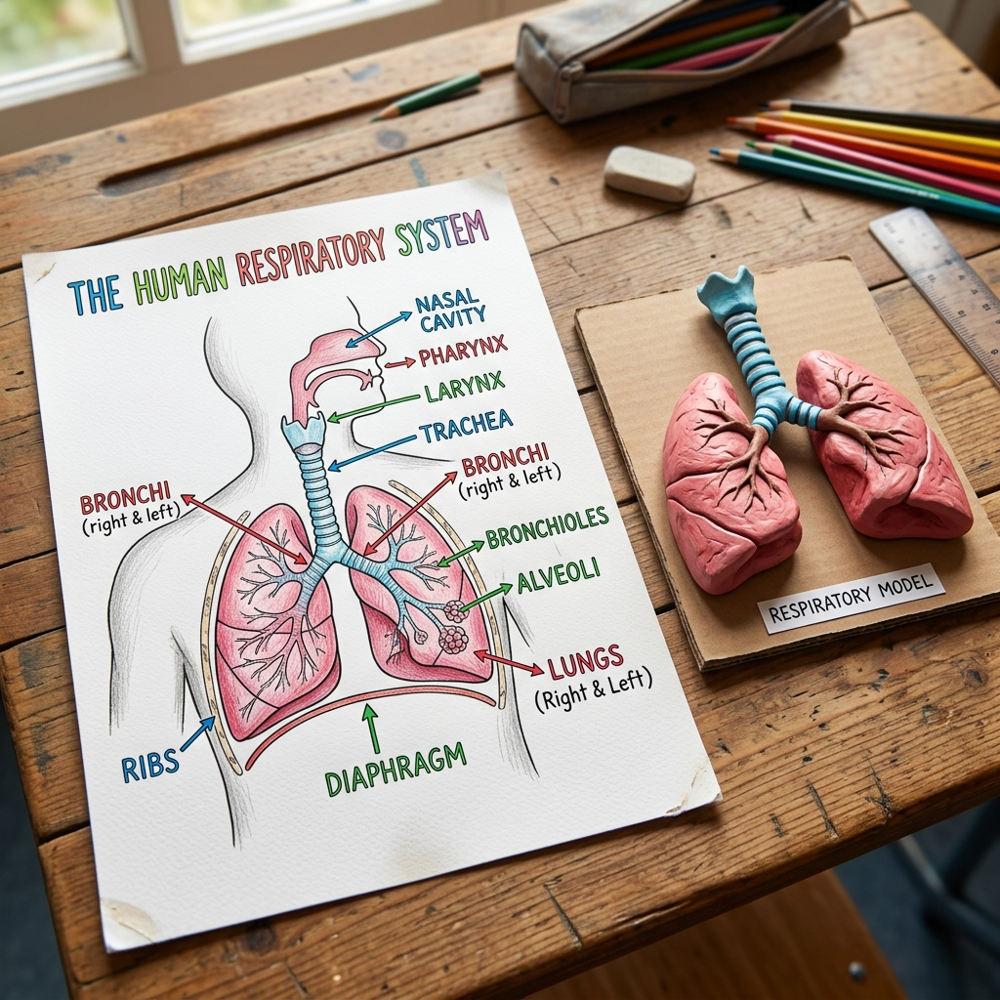

INSTITUTO ADVENTISTA BARADERO
INSTITUTO ADVENTISTA BARADERO
INSTITUTO ADVENTISTA BARADERO
INSTITUTO ADVENTISTA BARADERO
La ciencia no se aprende solo leyendo: ¡se hace en el laboratorio! Aquí compartimos los proyectos, experimentos y descubrimientos de los alumnos de Iabar.
Los alumnos usaron microscopios ópticos para explorar el mundo invisible: paramecios, bacterias y microorganismos de muestras de agua. También armamos el proyecto de biosensores y frascos de agua.

Paramecios en muestra de agua del río
Foto de alumnos
usando el microscopio
Proyecto biosensores
y frascos de agua
Cultivo de muestras
y preparación de portaobjetos
Experimento con
agua del grifo vs. del río
Los cuadernos de los investigadores de Iabar son obras de arte científico. Hipótesis escritas a mano, dibujos de paramecios al microscopio, tablas de observación y conclusiones que demuestran cómo piensan nuestros científicos.

Hipótesis y dibujos de paramecios al microscopio
Cuaderno con hipótesis
escritas a mano
Dibujos científicos
de observaciones
Tablas de datos
y conclusiones
Desde esquemas detallados del Sistema Respiratorio hasta maquetas tridimensionales construidas a mano, nuestros alumnos aprenden la anatomía construyéndola. El aprendizaje más profundo siempre pasa por las manos.

Diagrama del Sistema Respiratorio con maqueta 3D
Maqueta del sistema
respiratorio
Esquemas del sistema
circulatorio
Modelos de ADN
en plastilina